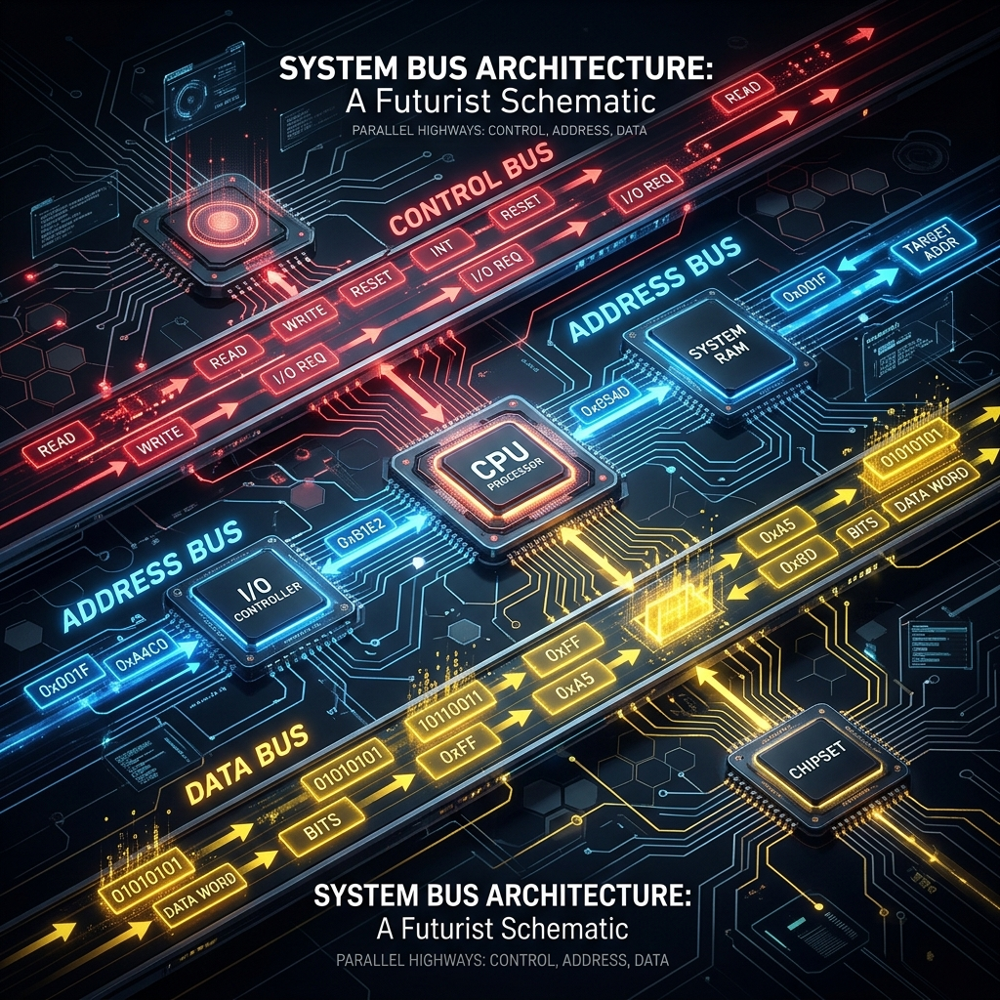
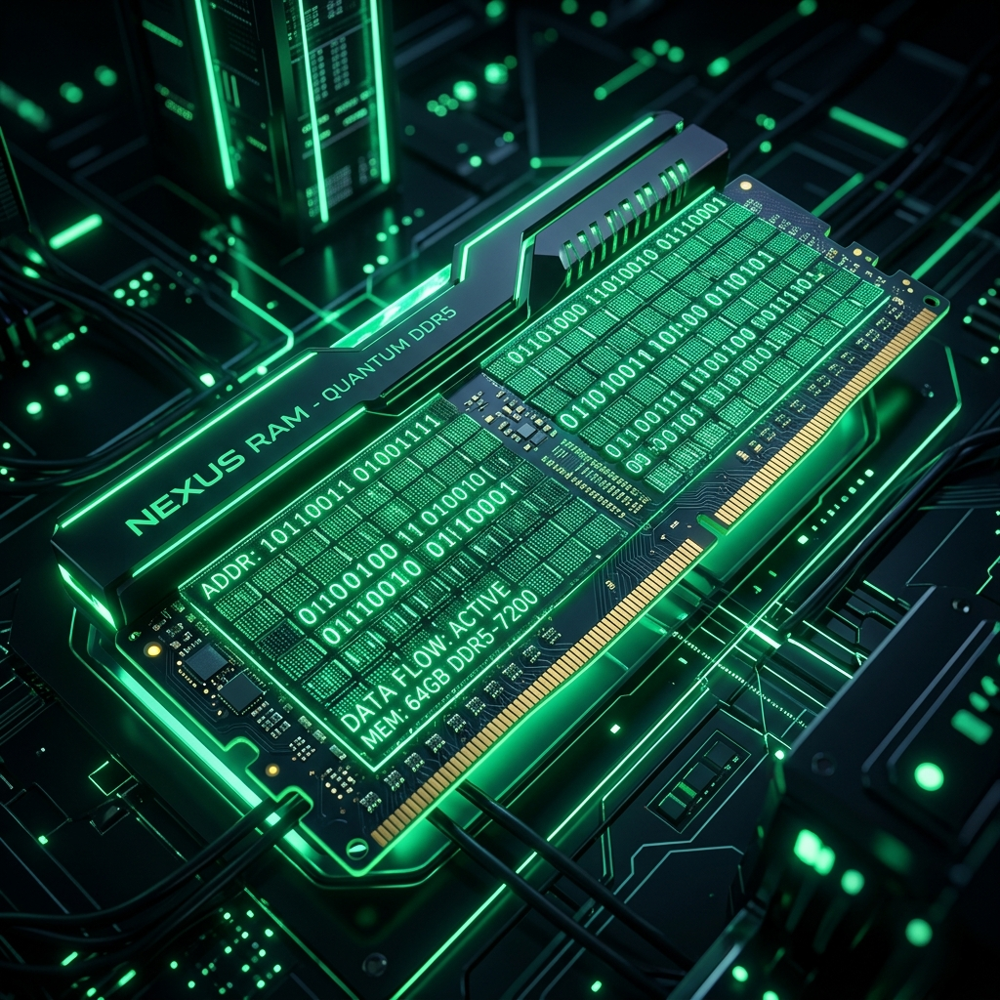
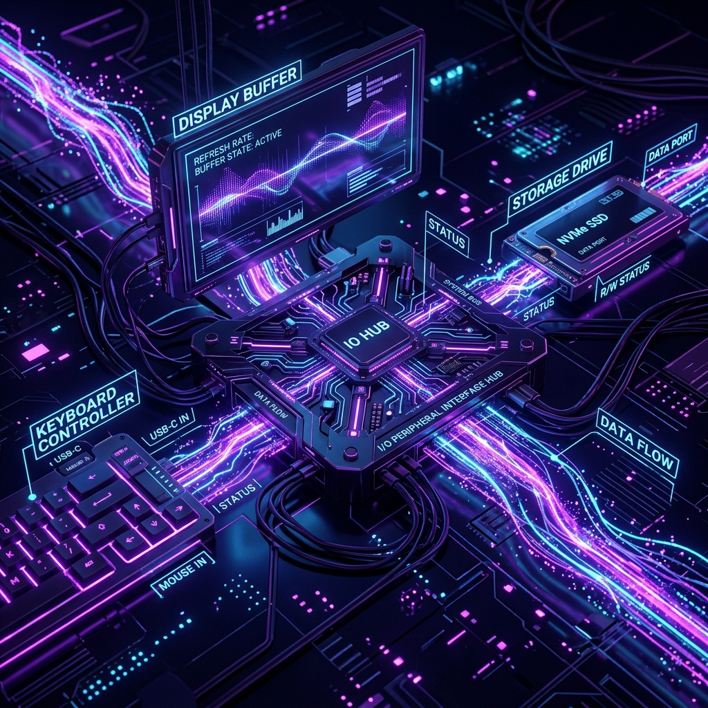

How Computer Components Talk To Each Other
A System Bus is an electronic communication highway consisting of parallel wires that link the CPU, Main Memory (RAM), and Input/Output Devices. It operates using 3 specialized sub-buses:
1. Control Bus (Bi-directional)
Carries timing & operational signals like READ, WRITE, and INTERRUPT.
2. Address Bus (CPU $\rightarrow$ Devices)
Carries the specific binary memory location or port address (e.g. 0x10AF).
3. Data Bus (Bi-directional)
Transfers the actual payload data bytes back and forth across components.

Bi-directional Control & Data highways with Unidirectional Address lines.
Interactive Live Signal Simulator
Select an operation below to see animated electrical pulses travel through the system bus
Execution Protocol Timeline
Step 0 / 4Bus Wire Electrical State
System Component Deep-Dive
Central Processing Unit (CPU)
The master controller. Initiates memory operations by driving the Address Bus and Control Bus. Reads or writes byte data over the Data Bus.
- Control Lines: Outgoing & Incoming
- Address Lines: Outgoing only
- Data Lines: Bi-directional

Main Memory (RAM)
Organized as a large array of indexed byte locations. Listens to the Address Bus, decodes the targeted memory location, and performs Read or Write.
- Address Decoding Matrix
- Tri-State Buffers for Data Bus
- Fast access (~50ns cycle)

Input & Output (I/O)
Connects external hardware (keyboard, mouse, display, disk). Driven via I/O Port Addresses or Memory-Mapped I/O (MMIO).
- Interrupt Request Lines (IRQ)
- Dedicated I/O Controller Hub
- Port & Memory Mapping
Bus Width & RAM Capacity Calculator
Understand how Address Bus width ($N$ lines) limits maximum addressable RAM space ($2^N$ bytes)
$2^{32} = 4,294,967,296$ Locations
Formula: $F \times (D / 8)$ Bytes/s
Test Your Knowledge: System Bus Quiz
Quickly verify your understanding of Address, Data, and Control bus dynamics.
1. Why is the Address Bus unidirectional (CPU $\rightarrow$ RAM/IO) while Data Bus is bidirectional?
2. If a computer has a 16-bit Address Bus, what is its maximum memory limit?